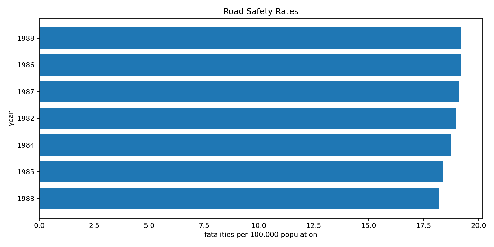

How do population-weighted road fatality rates change by year?
The largest observed fatalities per 100,000 population is 19.209 for 1988.0. This ranking is descriptive, not a recommendation.

| segment | rows_used | metric | minimum | maximum |
|---|---|---|---|---|
| 1982 | 48 | 18.980725 | 105 | 4615 |
| 1983 | 48 | 18.190894 | 94 | 4573 |
| 1984 | 48 | 18.742980 | 79 | 5020 |
| 1985 | 48 | 18.395353 | 90 | 4960 |
| 1986 | 48 | 19.180739 | 100 | 5253 |
| 1987 | 48 | 19.122693 | 101 | 5504 |
| 1988 | 48 | 19.209416 | 104 | 5390 |
Rate uses summed fatalities divided by summed population, per 100,000; states repeat over years.
Check exposure in vehicle miles and state-level differences.